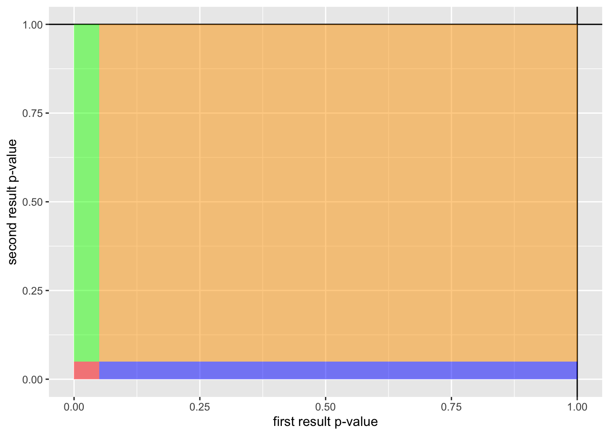

Family-Wise Error (R)
Course Overview
Red means that the page does not exist yet
Orange means that the page is started
Click here for a reminder about what positive and negative effects are in the population
In the context of multiple testing we will refer to effects in the population that do exist as positives, and effects that don’t exist in the population as negatives. This means that a test on a negative effect should ideally you give you a non-significant (negative) result in your sample so that your sample reflects the population (and gives you a true negative). Similarly, if an effect in the population exists, ideally your test on your sample will give you a significant result to reflect a true positive.
Alpha threshold of .05 as a default
The page below assumes that the alpha threshold for a false positive is .05, and so some formulas below have been simplified to reflect this convention. However, this \(\alpha\) threshold of .05 is not an absolute rule, and so you would need to adapt the relevant formulas below if you decided you wanted to accept a different likelihood of false positives.
As mentioned in statistics basics, researchers generally accept a 5% risk of a study reporting a significant finding when the effect found in their sample is not representative of the population (i.e. an \(\alpha\) value of .05). However, what happens if you conduct multiple tests within a study? Applying the same \(\alpha\) value of .05 to each test within your study becomes a problem of multiple testing increasing the risk of a false positive (unless you happen to only be investigating real effects, which you cannot be sure you are doing). To illustrate the issue, let’s create some random data in which you want to test if there are optimal combinations of height and foot size that predict maths ability. One thing you might be thinking is that this is a meaningless analysis, that there is no optimal height and foot-size in relation to maths ability - and that seems like a sensible opinion. However, without correcting for multiple testing, it’s almost guaranteed that the following analysis on randomised data will produce false-positives, i.e. identify certain combinations of height and foot-size that are associated with significantly higher or lower mathematics scores.
The analysis below will create 12 heights and 12 shoe sizes, generate 20 participants in each combination with a random score out of 100 in a maths test. Then there will be comparisons between each group and all other participants to identify if their especially good (or bad) at maths (which, again, is a ridiculous thing to believe).
options(scipen = 999)
library(ggplot2)
# Set a seed number so that the randomisation won't change with each update of the textbook (if this isn't done, then there is a .95^144 chance that the below example will not work)
set.seed(1)
participants_per_condition = 20
heights = 10:21 * 7.5
shoe_sizes = 4:15
maths_scores <- data.frame(
height =rep(heights, each = length(heights)* participants_per_condition),
shoe = rep(shoe_sizes, length(shoe_sizes) * participants_per_condition),
maths = rnorm(participants_per_condition * length(shoe_sizes) * length(heights), mean = 75, sd = 15)
)
## Analyses
library(tidyverse)── Attaching core tidyverse packages ──────────────────────── tidyverse 2.0.0 ──
✔ dplyr 1.1.3 ✔ readr 2.1.4
✔ forcats 1.0.0 ✔ stringr 1.5.0
✔ lubridate 1.9.2 ✔ tibble 3.2.1
✔ purrr 1.0.2 ✔ tidyr 1.3.0
── Conflicts ────────────────────────────────────────── tidyverse_conflicts() ──
✖ dplyr::filter() masks stats::filter()
✖ dplyr::lag() masks stats::lag()
ℹ Use the conflicted package (<http://conflicted.r-lib.org/>) to force all conflicts to become errorsmaths_scores %>%
group_by(height, shoe) %>%
summarise(
score = mean(maths),
sd = sd(maths),
se = sd(maths)/length(maths),
sig = "no",
color="red"
) -> maths_summarised`summarise()` has grouped output by 'height'. You can override using the
`.groups` argument.for(height in heights){
for(shoe_size in shoe_sizes){
exp_group_scores = maths_scores$maths[maths_scores$height == height & maths_scores$shoe == shoe_size]
con_group_scores = maths_scores$maths[maths_scores$height != height & maths_scores$shoe != shoe_size]
this_t.test <- t.test(exp_group_scores, con_group_scores)
if(this_t.test$p.value < .05){
maths_summarised$sig[maths_summarised$height == height & maths_summarised$shoe == shoe_size] = "yes"
maths_summarised$color[maths_summarised$height == height & maths_summarised$shoe == shoe_size] = "blue"
}
}
}
# setting yes and no colors
yes_no_colors <- c("red", "#005599")
yes_no_colors <- setNames(yes_no_colors, c("no", "yes"))library(plotly)
Attaching package: 'plotly'The following object is masked from 'package:ggplot2':
last_plotThe following object is masked from 'package:stats':
filterThe following object is masked from 'package:graphics':
layoutplot_ly(
data = maths_summarised,
x=~height,
y=~shoe,
z=~score,
color=~sig,
error_z = list(array=~se),
type = "scatter3d",
mode = "markers",
size = 1,
colors = yes_no_colors
) The above figure shows that with an analysis on randomised data there were multiple combinations of foot-size and height that were associated with significantly better or worse performance in the maths task. As this is randomised data, it should illustrate the risk of multiple testing without correction. You may be wondering how likely was it that we would get a false-positive. Assuming that the comparisons you are making are meaningless, the risk of a false positive can be summarised as:
\[ falsePositive_{risk} = (1-\alpha)^{comparisons} \]
\(\alpha\) referring to your accepted risk of a false positive
\(comparisons\) referring to the number of comparisons you make
Now let’s discuss some corrections for multiple testing and see whether they successfully reduce the number of false positives in our hypothetical scenario.
Bonferroni correction
A simple correction to avoid the risk of false positives is to divide the \(a\) threshold by the number of tests:
\[ \alpha = \frac{.5}{m} \]
- \(m\) is the number of comparisons
In some ways, this does the job of correcting for false-positives well, as your p-value threshold is directly proportionate to the number of tests you complete. Let’s see if a Bonferroni correction removes all the false-positives:
# reset the "sig" column
maths_summarised$sig = "no"
comparisons = length(heights) * length(shoe_size)
for(height in heights){
for(shoe_size in shoe_sizes){
exp_group_scores = maths_scores$maths[maths_scores$height == height & maths_scores$shoe == shoe_size]
con_group_scores = maths_scores$maths[maths_scores$height != height & maths_scores$shoe != shoe_size]
this_t.test <- t.test(exp_group_scores, con_group_scores)
# here is where the new alpha threshold is applied
if(this_t.test$p.value < .05/comparisons){
maths_summarised$sig[maths_summarised$height == height & maths_summarised$shoe == shoe_size] = "yes"
}
}
}plot_ly(
data = maths_summarised,
x=~height,
y=~shoe,
z=~score,
color=~sig,
error_z = list(array=~se),
type = "scatter3d",
mode = "markers",
size = 1,
colors = yes_no_colors
) All the points are red above, confirming that there were no false-positives. However, this was the new alpha value:
\[ \alpha = \frac{.05}{N_{tests}} = \frac{.05}{144} = 0.0003472222 \]
Which means that you would need either to be investigating a very large effect or testing very many participants. Bonferroni correction is thus very conservative, and increases the risk of a false-negative (incorrectly concluding that there is no effect). There is also an impact on family-wise error rate which needs to be explained before you consider other corrections.
Family-wise error rate (FWER)
If our aim is to reduce the risk of a study reporting at least one false-positive to 5%, this is the family-wise error rate (FWER) and is distinct to the risk of a single statistical test giving you a false positive which is the \(\alpha\) threshold. Without correcting the for multiple testing the family-wise error rate would increase with more tests (as shown above). However, some corrections for multiple testing are so conservative that the family-wise error rate will drop below 5%.
A problem with Bonferroni corrections is that they do not maintain a family-wise error rate of .05. The more tests you conduct, the lower the family-wise error rate is. To illustrate this, we first need to calculate the likelihood that there are not any false-positives across all tests. For each individual test the likelihood is:
\[ 1-\alpha_{bonferroni} \]
If you ran 2 tests, a Bonferroni correction means that for each tests there is only a .025 (.05 divided by 2) chance that the test would give a false-positive. So for this example of 2 tests you would get:
\[ 1 - .025 = .975 \]
A 97.5% chance of avoiding a false positive for one test alone. For each test you run, you multiply this likelihood by itself to calculate the likelihood that all your tests are not false-positives. So if there are 2 tests:
\[ (1 - .025) * (1 - .025) = .975 * .975 = .950625 \]
Or, you could just take the likelihood for any individual test’s false-positive and apply the power of the number of tests, e.g.:
\[ (1-.025)^2 = .975^2 = .950625 \]
Or more generally
\[ (1 - \alpha_{bonferroni})^m \]
\(\alpha_{bonferroni}\) is the Bonferroni corrected alpha value
\(m\) is still the number of tests
Now that we have the likelihood of getting no false-positives, we can calculate the family-wise error rate (FWER) by subtracting this likelihood from 1:
\[ FWER = 1 - (1 - \alpha_{bonferroni})^m \]
If there are 2 tests, the FWER is:
\[ FWER = 1 - (1 - .05)^2 = 1 - .975^2 = 1 - .950625 = .049375 \]
Whilst this is very similar to our original \(\alpha\) threshold of .05, it is more conservative because the threshold for a false-positive is stricter (i.e. lower) than .05. Let’s check these out for Šidák and Holm-Bonferroni corrections.
Šidák correction
A less conservative correction is Šidák which aims to maintain a family-wise error rate across all your tests. If your philosophy is that you only want a 5% chance of a false positive across your whole study, then Šidák’s formula successfully calculates the required \(\alpha\) value:
\[ \alpha_{Šidák} = 1 - (1-.05)^{(1/m)} \]
\(\alpha_{Šidák}\) is the Šidák corrected
\(.05\) is included as the FWER that this formula aims to achieve. If you wanted a higher or lower FWER you would need to adjust this number in your formula
\(m\) is (still) the number of tests you conduct in your study
Optional - how do we get Šidák’s formula?
For those of you interested in how we get to Šidák’s formula, we use algebra to re-organise the FWER formula above to focus on calculating Alpha rather than FWER:
\[ FWER = 1 - (1 - \alpha)^m \]
Let’s minus 1 from both sides:
\[ FWER - 1 = -(1 - \alpha)^m \]
Then multiply both sides by -1:
\[ 1 - FWER = (1 - \alpha)^m \]
Then apply the power of (1/m) to both sides:
\[ (1 - FWER)^{1/m} = 1 - \alpha \]
Followed by adding alpha to both sides:
\[ \alpha + (1 - FWER)^{1/m} = 1 \]
Then subtracting \((1 - FWER)^{1/m}\) from both sides:
\[ \alpha = 1 - (1 - FWER)^{1/m} \]
Boom, you’re done.
Now let’s apply Šidák’s corrected \(\alpha\) to the above maths test data.
# reset the "sig" column
maths_summarised$sig = "no"
sidak_alpha = 1 - (1 - .05)^(1/144)
comparisons = length(heights) * length(shoe_size)
for(height in heights){
for(shoe_size in shoe_sizes){
exp_group_scores = maths_scores$maths[maths_scores$height == height & maths_scores$shoe == shoe_size]
con_group_scores = maths_scores$maths[maths_scores$height != height & maths_scores$shoe != shoe_size]
this_t.test <- t.test(exp_group_scores, con_group_scores)
# here is where the new alpha threshold is applied
if(this_t.test$p.value < sidak_alpha){
maths_summarised$sig[maths_summarised$height == height & maths_summarised$shoe == shoe_size] = "yes"
}
}
}plot_ly(
data = maths_summarised,
x=~height,
y=~shoe,
z=~score,
color=~sig,
error_z = list(array=~se),
type = "scatter3d",
mode = "markers",
size = 1,
colors = yes_no_colors
)Good news - no false positives 😺. However, the \(\alpha\) threshold is simarly conservative as a Bonferroni correction:
Bonferroni: 0.0003472
Šidák: 0.0003561
And so both would require unusually strong effects or extremely large sample sizes to detect true-positive results.
Holm-Bonferroni method
The Holm-Bonferroni method orders the p-values from the relevant tests in order of significance, and applies a Bonferroni correction threshold to the most significant results, and gradually reduces the threshold as you proceed through the ranks. To illustrate this, let’s imagine a researcher ran 4 tests, and got the following 4 p-values (already ranked)
\(p_1\) = .005
\(p_2\) = .0125
\(p_3\) = .03
\(p_4\) = .049
If we were to apply a Bonferroni correction, all p-values would need to be less than .05/4 = .0125 to be significant. Considering the fact that all results would be significant with an uncorrected \(\alpha\) threshold, it seems that rejecting 3 out of 4 p-values could reflect an overly conservative \(\alpha\). Holm-Bonferroni only compares the most significant result against a Bonferroni corrected threshold, and then reduces the denominator by 1 for each comparison made (\(k\) below):
\[ \frac{.05}{m + 1 - k} \]
\(m\) is the number of tests/comparisons
\(k\) is the rank of the current comparison’s p-value (1 for the smallest p-value)
Let’s apply this formula to each of our 4 p-values:
\(p_1\) = .005 compared to the threshold of \(.05/(4 + 1 - 1) = .0125\) significant
\(p_2\) = .0125 compared to the threshold of \(.05/(4 + 1 - 2) = .0167\) significant
\(p_3\) = .03 compared to the threshold of \(.05/(4 + 1 - 3) = .025\) not significant
Once you reach a non-significant result, you stop your comparisons as you’ve identified the p-values that are at too high a risk of a false-positive. To highlight the weirdness of what would happen if you continued:
- \(p_4\) = .049 compared to the threshold of \(.05/(4 + 1 - 4) = .05\) significant!?!?!?!?
As \(p_3\) is more significant than \(p_4\) it would be strange to conclude that the finding associated with \(p_4\) is significant but \(p_3\) isn’t.
An advantage of this approach is that you won’t only capture the most significant result(s) in the way that you would with a Bonferroni correction, but the scaling adjustment is (arguably) an acceptable risk to false-positives compared to the risk of false-negatives for all p-values that a Bonferroni correction involves.
But what about the family-wise error rate (FWER)? Well, remember that FWER refers to the risk of at least one false positive, so the FWER formula is identical to a Bonferroni correction as the likelihood of the first false positive across all tests is the Bonferroni corrected alpha value:
\[ FWER = 1 - (1 - \alpha_{bonferroni})^m \]
Optional - likelihood of a second false-positive?
Whilst FWER is identical for Bonferroni and Holm-Bonferroni corrections, Holm-Bonferroni has a higher risk of getting multiple false-positives. Let’s illustrate this with binomial mathematics, starting with the likelihood of a Bonferroni test’s likelihood of 2 false positives if there are 2 tests:
bonferroni_comb <- data.frame(
description = c(
"Both tests are false-positives",
"Only the first test is a false-positive",
"Only the second test is a false-positive",
"Neither test is a false-positive"
),
first.test = c(.025,.025,.975,.975),
second.test = c(.025,.975,.025,.975)
)
bonferroni_comb$likelihood = bonferroni_comb$first.test * bonferroni_comb$second.test
knitr::kable(bonferroni_comb)| description | first.test | second.test | likelihood |
|---|---|---|---|
| Both tests are false-positives | 0.025 | 0.025 | 0.000625 |
| Only the first test is a false-positive | 0.025 | 0.975 | 0.024375 |
| Only the second test is a false-positive | 0.975 | 0.025 | 0.024375 |
| Neither test is a false-positive | 0.975 | 0.975 | 0.950625 |
sum(bonferroni_comb$likelihood)[1] 1If you add all the likelihoods together you get 1, confirming that we have addressed all outcomes’ likelihoods. The likelihood of 2 false-positives is .0025. We can visualise the above as follows:
ggplot() +
geom_vline(xintercept = 1) +
geom_hline(yintercept = 1) +
xlim(0,1) +
ylim(0,1) +
xlab("first result p-value") +
ylab("second result p-value") +
geom_rect(
mapping = aes(
xmin = 0,
xmax = .05,
ymin = 0,
ymax = .05
),
fill = "red",
alpha = .5
) +
geom_rect(
mapping = aes(
xmin = 0,
xmax = .05,
ymin = .05,
ymax = 1
),
fill = "green",
alpha = .5
) +
geom_rect(
mapping = aes(
xmin = 0.05,
xmax = 1,
ymin = 0,
ymax = .05
),
fill = "blue",
alpha = .5
) +
geom_rect(
mapping = aes(
xmin = .05,
xmax = 1,
ymin = 0.05,
ymax = 1
),
fill = "orange",
alpha = .5
) 
The area for each color on the above figure represents the likelihood of its respective outcome:
- Red: “Both tests are false-positives”, p = 0.000625, i.e. takes 0.000625 of the total area of the above figure
- Green: “Only the first test is a false-positive”, p = 0.024375, i.e. takes 0.024375 of the total area of the above figure
- Blue: “Only the second test is a false-positive”, p = 0.024375, i.e. takes 0.024375 of the total area of the above figure
- Orange: “Neither test is a false-positive”, p = 0.950625, i.e. takes 0.950625 of the total area of the above figure
Let’s now compare the above table to a Bonferroni-Holm methodology. It’s a little more complicated by the fact that there are 2 different p-value thresholds, which makes it more difficult to calculate outcomes that are mutually exclusive. We will try to be precise to avoid making references to overlapping outcomes:
bonferroni_holm_comb <- data.frame(
description = c(
"Both are false positives, but only the first test is <.025",
"Both are false positives, but only the second test is <.025",
"Both are false positives and both < .025",
"Only the first test is a false-positive",
"Only the second test is a false-positive",
"Neither test is a false-positive"
),
first.test = c(
.025, # likelihood of 0 to .025 as it is the ONLY test that it < .025
.025, # likelihood of .025 to .05 as ONLY the OTHER test is < .025
.025, # likelihood of 0 to .025 as both tests are < .025
.025, # likelihood of 0 to .025 as it is the ONLY false-positive
.95, # likelihood of 0 to .95 as the other test is significant
.975 # likelihood of 0 to .975 as the other test is not significant
),
second.test = c(
.025, # likelihood of .025 to .05 as ONLY the OTHER test is < .025
.025, # likelihood of 0 to .025 as it is the ONLY test that it < .025
.025, # likelihood of 0 to .025 as both tests are <.025
.95, # likelihood of 0 to .025 as it is the ONLY false-positive
.025, # likelihood of 0 to .95 as the other test is significant
.975 # likelihood of 0 to .975 as the other test is not significant
)
)
bonferroni_holm_comb$likelihood = bonferroni_holm_comb$first.test * bonferroni_holm_comb$second.test
# knitr::kable(bonferroni_holm_comb)
sum(bonferroni_holm_comb$likelihood)[1] 1Looks like we succeeded 😸. Now let’s visualise the above:
ggplot() +
geom_vline(xintercept = 1) +
geom_hline(yintercept = 1) +
xlim(0,1) +
ylim(0,1) +
xlab("First result p-value") +
ylab("Second result p-value") +
geom_rect(
mapping = aes(
xmin = .0,
xmax = .025,
ymin = 0,
ymax = .025
),
fill = "blue",
alpha = .5
) +
geom_rect(
mapping = aes(
xmin = 0,
xmax = .025,
ymin = .025,
ymax = .05
),
fill = "red",
alpha = .5
) +
geom_rect(
mapping = aes(
xmin = .025,
xmax = .05,
ymin = 0,
ymax = .025
),
fill = "green",
alpha = .5
) +
geom_rect(
mapping = aes(
xmin = 0.05,
xmax = 1,
ymin = 0,
ymax = .025
),
fill = "purple",
alpha = .5
) +
geom_rect(
mapping = aes(
xmin = 0.0,
xmax = .025,
ymin = 0.05,
ymax = 1
),
fill = "brown",
alpha = .5
) +
geom_rect(
mapping = aes(
xmin = 0.025,
xmax = 1,
ymin = 0.025,
ymax = 1
),
fill = "black",
alpha = .5
) - Red: “Both are false positives, but only the first test is <.025”, p = 0.000625, i.e. takes 0.000625 of the total area of the above figure
- Green: “Both are false positives, but only the second test is <.025”, p = 0.000625, i.e. takes 0.024375 of the total area of the above figure
- Blue: “Both are false positives and both < .025”, p = 0.024375, i.e. takes 0.000625 of the total area of the above figure
- Brown: “Only the first test is a false-positive”, p = 0.02375, i.e. takes 0.950625 of the total area of the above figure
- Purple: “Only the second test is a false-positive”, p = 0.02375, i.e. takes 0.950625 of the total area of the above figure
- Grey: “Neither test is a false-positive”, p = 0.02375, i.e. takes 0.950625 of the total area of the above figure
Holm-Šidák method
Combining the principles above, you can apply Holm’s philosophy
\[ \frac{.05}{m + 1 - k} \]
to the Šidák correction:
\[ \alpha_{Šidák} = 1 - (1-.05)^{(1/m)} \]
to get
\[ \alpha_{h-s} = 1 - ( 1 - .05)^{1/(m + 1-k)} \]
\(\alpha_{h-s}\) refers to the Holm-Šidák alpha value
\(m\) refers to the number of tests
\(k\) refers to the rank of the current test you are calculating the threshold for
An advantage of using this Holm-Šidák method is that it will maintain a FWER of .05 in the same way that the Šidák method does. This is because the FWER reflects the likelihood of at least one false-positive (as described above), and the Šidák method maintains a FWER of .05.
Question 1
An alpha value of .05 suggests that 5% of published studies are false-positives?
Question 2
Which correction is more useful for keeping the alpha and FWER rates the same